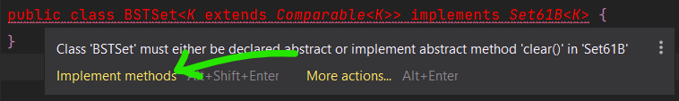
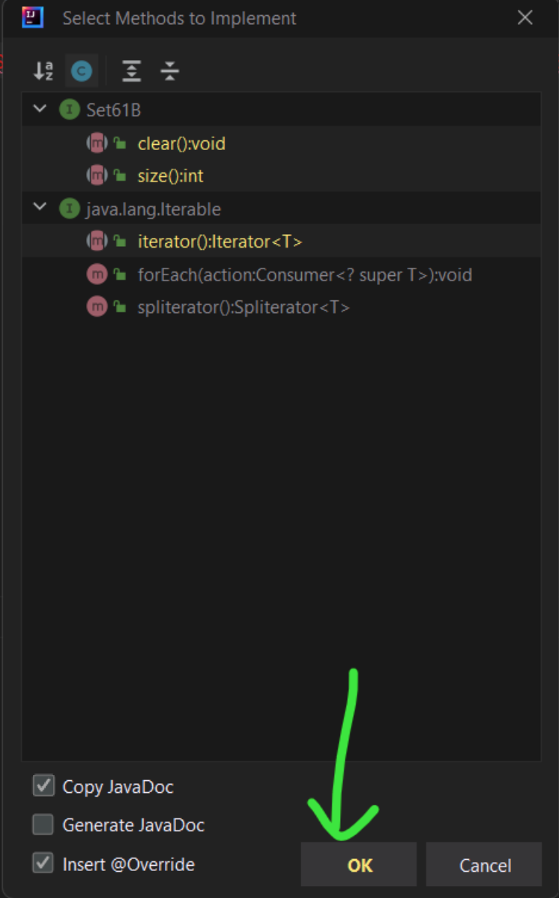

实验 06：BSTMap
常见问题
本实验的常见问题可以在 这里 找到。
简介
在本实验中，你将创建
BSTMap
，这是
Map61B
接口的基于二叉搜索树的实现，它表示一个基本的基于树的映射。你将完全从头开始创建它，使用提供的接口作为指南。
完成实现后，你将把你的实现与基于列表的
Map
实现
ULLMap
以及 Java 内置的
TreeMap
类（它使用一种称为
红黑树
的 BST 变体）进行性能比较。
从骨架仓库拉取
要获取作业，请从你的个人仓库中的
skeleton
拉取：
git pull skeleton main
这个作业是
lab06
。
BSTMap
在本实验（以及未来的实验）中，我们可能不会像过去那样提供那么多框架代码。如果你在开始时遇到困难，请来到实验室或查看提供的任何资源！
创建一个类
BSTMap
，它使用 BST（二叉搜索树）作为其核心数据结构来实现
Map61B
接口。在你创建
BSTMap
类并实现
Map61B
中的所有方法之前，你的代码不会编译。你可以通过编写所有必需方法的方法签名来一次实现一个方法，但对于其他实现抛出
UnsupportedOperationException
，直到你真正开始编写它们。请参阅此
部分
了解如何抛出异常。
在你的实现中，你应该确保
BSTMap<K,V>
中的泛型键
K
实现了
Comparable
。这被称为
有界类型参数
。
语法
有点棘手，但我们在下面给出了一个例子。在这里，我们正在为
Comparable
对象创建一个
BSTSet
。我们出于教学目的加入了相当奇怪的
compareRoots
（关于
compareTo
的复习，请参阅此
文档
）：
public class BSTSet<K extends Comparable<K>> implements Set61B<K> {
private class BSTNode {
K item;
// ...
}
private BSTNode root;
/* Returns whether th是 BSTSet's root 是 greater than, equal to, or less
* than the other BSTSet's root, following the usual `compareTo`
* convention. */
public int compareRoots(BSTSet other) {
/* We are able to safely invoke `compareTo` on `n1.item` because we
* know that `K` extends `Comparable<K>`, so `K` 是 a `Comparable`, and
*`Comparable`s must implement `compareTo`. */
return th是.root.item.compareTo(other.root.item);
}
// ...
}
你可能已经注意到，有界类型参数的语法使用
extends
，尽管
Comparable
是一个
interface
。在有界类型参数的上下文中，
extends
可以表示
extends
或
implements
（
文档
）。别问我们为什么——我们也不知道。
（这个语法还意味着你可以"扩展"
final
类，比如
Integer
，这是不可能的。Java 真有你的！）
请记住，上面的代码片段模拟的是一个
Set
——你需要实现一个
Map
。我们建议你对
BSTMap
使用类似的逻辑，使用一些嵌套的节点类来帮助实现。你的
BSTMap
应该有两个泛型参数
K
和
V
，分别表示你的
BSTMap
中键和值的泛型类型。
IntelliJ 有一个很好的功能，可以为你生成方法签名。如果你正在实现一个接口但尚未实现所有方法，IntelliJ 会用红色高亮显示类签名。如果你将鼠标悬停在上面，你应该能够选择
Implement methods
。在弹出窗口中，确保你选择了"复制 JavaDoc"和"Insert @Override"选项。点击"确定"，IntelliJ 应该会用所需的方法签名填充类（尽管它们不会起作用！）并复制注释。
它应该看起来像这样（
你没有
Set61B
，这只是一个例子！
）：


在这个例子中，IntelliJ 将生成
clear
、
size
和
iterator
方法签名，因为这就是我们虚构的
Set61B
接口所需要的全部。如果你按照这个过程处理你的代码，你应该拥有
Map61B
所需的所有方法签名。（如果你愿意，你也可以选择生成哪些签名。）
练习：
BSTMap
如前所述，你需要创建一个类
BSTMap
，它实现
Map61B
接口。确保你在
BSTMap.java
中编写你的实现，否则你的代码可能无法在自动评分器上运行！以下方法是必需的：
-
void put(K key, V value)：将指定的key与value关联。 -
V get(K key)：返回与key关联的值。 -
boolean containsKey(K key)：返回此映射是否具有给定key的映射。 -
int size()：返回键值映射的数量。 -
void clear()：从此映射中移除所有映射。
确保通读
Map61B
接口中每个方法的注释，以完全理解要实现什么。上面的描述不一定全面。
出于调试目的，你的
BSTMap
还应该包括一个额外的方法
printInOrder()
（在
Map61B
接口中没有提供），它按键递增的顺序打印出你的
BSTMap
。
我们不会测试这个方法的结果，但你可能会发现这对测试你的实现很有帮助！
实现
BSTMap
类，它实现
Map61B
接口和相关的非可选方法。你应该通过使用有界类型参数确保你的
BSTMap
中的键是
Comparable
的。
我们
强烈建议
你创建辅助方法来促进你的实现（特别是，强烈鼓励使用递归辅助方法）。
不幸的是，你需要实现的大多数方法都依赖于其他方法来进行测试（
get
需要
put
等）。这使得在实现
put
之前很难测试大多数方法。我们建议你按照
Map61B
中指定的顺序实现这些方法。
你可以使用
TestBSTMap.java
测试你的实现。
BSTMap
有一个可选部分。这些方法是可选实现的：
iterator
、
remove
、
keySet
。
它们对于本
部分
中描述的计时部分不是必需的。
如前所述，如果你不实现可选部分，则抛出一个
UnsupportedOperationException
，如下所示：
throw new UnsupportedOperationException();
如果你正在完成可选部分，请参阅此
部分
和
Map61B
中的注释以获取更详细的描述。
资源
以下资源可能会有所帮助：
那么……它有多快？
InsertRandomSpeedTest.java
中提供了一个交互式速度测试。在完成
BSTMap
之前，不要尝试运行此测试。准备就绪后，你可以在 IntelliJ 中运行测试。
InsertRandomSpeedTest
类对你的
BSTMap
、
ULLMap
（提供）、Java 内置的
TreeMap
和 Java 内置的
HashMap
（你将在后面的实验中进一步探索）进行元素插入速度测试。它通过询问用户每个要插入的 String 的所需长度以及输入大小（要执行的插入次数）来工作。然后它生成那么多指定长度的 String，并将它们作为
<String, Integer>
对插入到映射中。
试试看，看看你的数据结构与简单实现和工业级实现相比，如何随着插入次数而扩展。请记住，渐近分析在小样本上不具代表性，所以如果你得到一个令人困惑的趋势，请确保你的输入足够大（但要记住有一个限制——如果你输入的值太大，程序可能会溢出，所以请使用足够大的值来尝试）。在一个名为
speedTestResults.txt
的文件中记录你的结果。
运行速度测试并在
speedTestResults.txt
中记录你的结果。你的结果不需要标准格式，但至少你应该包括你做了什么和你观察到了什么。
评分
本实验满分 5 分。Gradescope 上没有隐藏测试，从某种意义上说，你在 Gradescope 上获得的分数就是你的最终分数。但是，有一个测试没有在本地提供，它会检查你的
speedTestResults.txt
。通过本地测试
TestBSTMap.java
意味着你将获得
BSTMap.java
的全部学分，但不一定是 Gradescope 上你的
speedTestResults.txt
的全部学分。
因此，对于本实验，只要你通过了相关的本地测试（
TestBSTMap.java
）并充分填写了
speedTestResults.txt
文件，你就会在 Gradescope 上获得全部学分。
更多（不计分）的
BSTMap
练习
这些不会被评分，但你仍然可以使用本地测试获得反馈，特别是
TestBSTMapExtra.java
（以及在自动评分器上）。
在你的
BSTMap
类中实现方法
iterator()
、
keySet()
、
remove(K key)
。实现
iterator
方法时，你应该返回一个按
排序顺序
遍历
键
的迭代器。
remove()
相当具有挑战性——你需要实现 Hibbard 删除。
对于
remove
，如果参数键在
BSTMap
中不存在，你应该返回
null
。否则，删除键值对（key, value）并返回 value。
提交
就像你之前的作业一样，添加、提交，然后将你的实验 06 代码推送到 GitHub。然后，提交到 Gradescope 来测试你的代码。
可选：渐近分析问题
这部分也是可选的，我们把它放在这里是为了额外练习渐近分析。对照 解答 检查你的答案！
给定
B
，一个具有
N
个键值对的
BSTMap
，以及
(K, V)
，一个随机键值对，回答以下问题。
除非另有说明，"大O"界（例如 $\mathcal{O}(N)$）和"大Theta"界（例如 $\Theta(N)$）指的是给定方法调用中的 比较次数 。
对于问题 1-7，说明陈述是真还是假。对于问题 8，给出运行时间界。
-
B.put(K, V)$\in \mathcal{O}(\log N)$ -
B.put(K, V)$\in \Theta(\log N)$ -
B.put(K, V)$\in \Theta(N)$ -
B.put(K, V)$\in \mathcal{O}(N)$ -
B.put(K, V)$\in \mathcal{O}(N^2)$
-
对于一个不等于
K的固定键C，B.containsKey(C)和B.containsKey(K)都在 $\Omega(\log N)$ 时间内运行。 -
（这个问题相当难。）设
b是BSTMap的一个Node，以及以root为根的两个子树，称为left和right。进一步假设方法numberOfNodes(Node p)返回以p为根的子树的节点数（$M$），并在 $\Theta(M)$ 时间内运行。假设1 <= z < numberOfNodes(b.root)，那么mystery(b.root, z)在最坏和最好情况下的运行时间是多少？
提示：看看你是否能先弄清楚
mystery
做什么，然后看看它是如何实现的。
public Key mystery(节点 b, int z) {
int numLeft = numberOfNodes(b.left);
if (numLeft == z - 1) {
return b.key;
} else if (numLeft > z) {
return mystery(b.left, z);
} else {
return mystery(b.right, z - numLeft - 1);
}
}